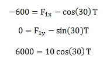
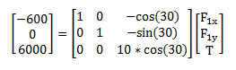
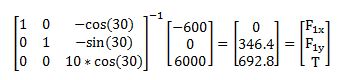
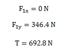

Solving Systems of Equations with Matrices
Setting up the equations of static equilibrium for a problem often leads to many equations and many unknowns. Solving for all of the unknowns by hand can be complicated and time consuming. Converting a large system of equations into a single matrix equation and then solving the matrix equation for the unknowns often saves time and is easier to check for errors.
In order to solve for all the unknowns algebraically the number of independent equations must be greater than or equal to the number of unknowns. In solving systems of equations with matrices, the number of equations must be equal to the number of unknowns. The method of solving systems of equations with matrices is also further limited to sets of linear equations. This method cannot be used to solve sets of non-linear equations.
The first step in solving systems of equations with matrices is to put the system of equations into matrix form. We will start with a generic set of equations shown to the right (part 1 of the diagram). X, Y and Z are the three unknowns we are solving for, the lowercase letters represent constants that are known.
The first step is to arrange the equations so that the known values are on the left and the unknowns are on the right. It is also helpful to rearrange the equations so that the unknowns are listed in the same order in each of the equations. The rearranged equations are shown in part 2 of the diagram to the right.
After rearranging the equations, we can more easily convert them to matrix form. The matrix form of the system of equations is shown in part 3 of the figure to the right. To write a system of equations in matrix form, follow the procedure below.
First, put the knowns on the left hand side of the equations into an N x 1 vector, were N is the number of equations. We will call this the B vector.
The left hand side of the equation will consist of an N x N matrix times an N x 1 vector.
The N x 1 vector is the all the unknowns being solved for in the order that they are listed in your system of equations.
The N x N matrix, which we will call the A matrix, contains all the coefficients for the unknowns. Each row represents one equation from your system of equations, and each column corresponds to a specific unknown. To write the first row of the matrix, use the first equation from your system of equations. Write out the coefficients for each unknown in the order that they are listed for the M x 1 vector. If a certain unknown does not appear in the equation, list the coefficient as zero. Repeat with the second equation for the second row of the matrix, the third equation for the third row of the matrix and so on.
Now that the system of equations is in matrix form, we can solve for the unknowns. To solve for the unknowns (X, Y and Z), we simply need to "divide" both sides by matrix A. Multiplying both sides of the equation by the inverse of A leaves us with A inverse time B on the left side of the equation, and just the unknowns on the right side of the equations. Therefore, multiplying A inverse times B gives a vector of all the unknowns we are trying to solve for.
Worked Problems
Worked Problem 1:
Solve for all unknowns in the following system of equations.
| Work | Comments |
|  |
The first step is to rearrange the equations so that all the knowns are on the left side of the equation, all unknowns are on the right side of the equation and all unknowns are listed in the same order for all equations. |
|  |
Next, the system of equations is put into matrix form with the knowns in matrix B and the coefficient's for the unknowns in matrix A. |
|  |
We multiply both sides of the matrix equation by A inverse in order to solve for the vector of unknowns. |
|  |
Pulling the individual scalar values back out from the vector and adding units, we have the answers. |
 |
| Author: Jacob Moore has liscenced this work under a Creative Commons Attribution-NonCommercial 3.0 Unported License. |